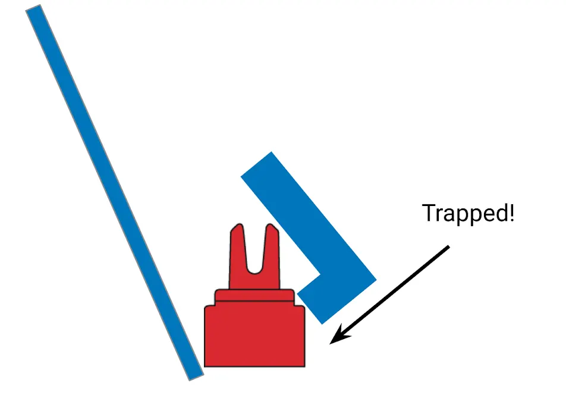

Our Programs
The foundation supports a growing portfolio of STEM programs — from competitive robotics to community outreach.
Competitive Robotics
Students develop mechanical-design, programming, testing, documentation, and teamwork skills through student-led robotics projects and adult mentorship. Competition gives that work an external setting to evaluate designs, investigate failures, and apply what students have learned.
Robotex Ninjas began in VEX IQ as Team 276C and has progressed into V5RC as Team 91276C. Our competitive experience also informs the demonstrations, workshops, and mentoring we offer other students. Team achievements and season history are on the Robotex Ninjas team page.

Inside our engineering notebook
See how our students turn testing and setbacks into better designs.
Explore our engineering notebook →Robotics Team Mentorship
NSF's Robotics Team Mentorship Program provides structured, student-centered educational mentorship to developing robotics teams. Our mentors teach concepts, demonstrate techniques, and help students build their own design, coding, and troubleshooting skills — mentors do not design, build, or code a team's robot for them, or make competition decisions on their behalf.
Interested teams: download and complete our Team Intake Form, then email it to robotexninjas@gmail.com. We'll follow up to schedule an initial assessment.
NSF Robotics Discovery
NSF Robotics Discovery brings hands-on robotics and engineering experiences directly to schools, libraries, youth organizations, and community events. Programs can include robot demonstrations, building, coding, driving, engineering challenges, and student-led presentations.
Each program is adapted to the age group, group size, available time, venue, and learning goals of the host organization.
Explore Program Formats → Become a Host →STEM Academy
NSF STEM Academy is being developed as a structured instructional program offering deeper, multi-session learning in robotics, coding, engineering design, and AI literacy.
Workshops, camps, and other scheduled opportunities are announced individually with their dates, intended ages, registration requirements, and any participation costs.
In development: a structured after-school STEM program for Grades 5–8 covering robotics basics, coding, the engineering design process, and AI literacy.
Request a Workshop →Innovation Lab
The Innovation Lab is being developed to support student research, science-fair projects, invention, and entrepreneurship education. Planned activities include identifying a problem, researching existing approaches, documenting ideas, developing prototypes, and learning how intellectual property fits into the innovation process.
Program availability, eligibility, and application details will be announced as activities launch.
Eligible projects may be considered for assistance from participating registered patent practitioners, subject to practitioner availability, conflict review, and a separate written engagement. The scope of any representation, and responsibility for government fees or other expenses, will be confirmed before work begins. Submitting an inquiry does not guarantee acceptance, filing, or a patent.
NSF Robotics Discovery
Flexible, hands-on robotics experiences for schools, libraries, PTAs, youth organizations, camps, and community events across North Texas.
Robotics Discovery Demo
A fast-paced introduction to robotics with live robot demonstrations, student presenters, and opportunities for audience questions.
Build, Code & Drive Workshop
Participants rotate through hands-on activities involving mechanical building, basic coding, robot operation, and engineering problem-solving.
Family Robotics Night
A station-based format designed for larger groups of children and families. Stations may include robot driving, building challenges, coding demonstrations, engineering design, and conversations with student mentors.
STEM Showcase / Festival Experience
An interactive booth or demonstration area where visitors can see competition robots, try driving activities, meet student mentors, and learn how to get started in robotics.
Bring NSF Robotics Discovery to Your Community
Schools, libraries, PTAs, camps, youth organizations, community groups, and companies may request a program. Tell us about your audience, age range, group size, location, preferred date, and what you would like students to experience. We will recommend a format based on available volunteers, equipment, and scheduling.